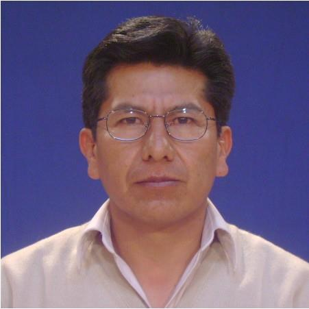
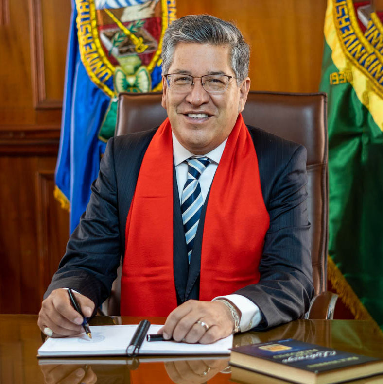

CARRERA DE INFORMATICA
La carrera de Informática en la Universidad Mayor de San Andrés (UMSA)
en Bolivia ofrece una sólida formación en tecnología de la información y
sistemas de computación. Los estudiantes de esta carrera adquieren
conocimientos en programación, redes, bases de datos, desarrollo de
software y otras áreas relacionadas con la informática. La UMSA es
reconocida por su enfoque en la calidad académica y la formación de
profesionales en el campo de la informática, lo que la convierte en una
opción atractiva para aquellos que buscan una carrera en tecnología en
Bolivia.
FACULTAD DE CIENCIAS PURAS
La Facultad de Ciencias Puras y Naturales de la UMSA se esfuerza por
promover la educación y la investigación en estas áreas científicas y
contribuir al avance del conocimiento en ciencias naturales y exactas
en Bolivia. Además, esta facultad suele desempeñar un papel importante
en la formación de profesionales en campos científicos y tecnológicos
en el país. Ten en cuenta que los detalles específicos sobre programas
académicos, departamentos y personal pueden variar con el tiempo, por
lo que te recomendaría visitar el sitio web de la UMSA o ponerse en
contacto directamente con la facultad para obtener información
actualizada.
pagina oficial de facebook
CABEZAS DE LA CARRERA
Las cabezas de una carrera en una institución educativa desempeñan un
papel crucial en la gestión y dirección de esa carrera.

Director de la carrera
JOSÉ MARÍA TAPIA BALTAZAR

Nuestro Magister
Juan Marcos Miranda Nina

Rector
OSCAR ARNALDO HEREDIA VARGAS

.png)